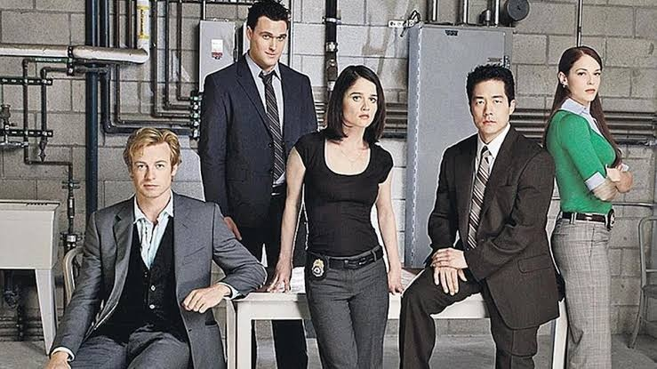

Персонал КБР · 4 бейджа
Команда, которая раскрыла дело

Бейдж № 01 · Консультант
Патрик Джейн
Саймон Бейкер
Очаровательный консультант КБР. Не носит оружие, любит чай, обладает феноменальной памятью и вниманием к деталям.
Бейдж № 02 · Старший агент
Тереза Лисбон
Робин Танни
Старший специальный агент КБР, руководитель отдела. Строгая, но справедливая. Часто прикрывает Джейна перед начальством.
Бейдж № 03 · Агент
Кимбэлл Чо
Тим Кан
Невозмутимый детектив, бывший член уличной банды, бывший военный. Обладает самым невозмутимым характером в команде.
Бейджи № 04–05 · Агенты
Уэйн Ригсби и Грейс Ван Пелт
Овайн Йомэн и Аманда Ригетти
Другие ключевые агенты КБР, между которыми на протяжении сериала развивается романтическая линия.